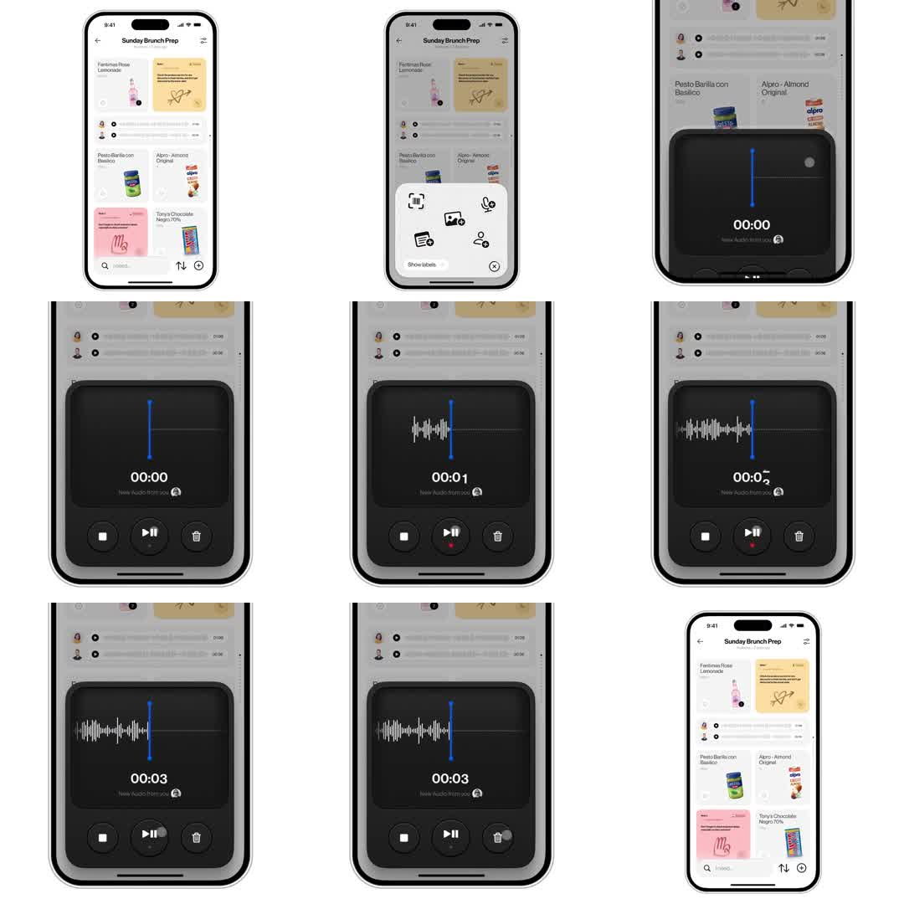

Mobile voice-note recorder: from a shared-list app ('Sunday Brunch Prep'), tapping the mic opens a dark bottom-sheet recorder; a vertical blue playhead line bounces with input level, a timer counts up, and a live waveform crystallizes behind the playhead as recording continues; stop/skip/delete controls; sheet dismisses back to the list.
Media
Frame-by-frame

0-12%
List view (recipe cards, checklist); action sheet slides up with 6 icon options (scan, photo, voice, etc.) - voice picked.
12-25%
Dark recorder sheet rises over dimmed list: black card, single vertical blue line at rest, '00:00' timer, avatar chip.
25-60%
Recording: timer counts 00:01->00:03; white waveform bars materialize behind the playhead leftward as audio accumulates; playhead line height pulses with input level.
60-85%
Waveform grows denser; controls at bottom (stop square, skip-forward, trash) stay static; 'New Audio from you' caption.
85-100%
Sheet slides down, list view restored.
Build prompt
Rebuild this flow 1:1: mobile voice-note recording in a shared-list app ("Sunday Brunch Prep") - three states: the list, an action sheet, and a dark recorder sheet with a live waveform.
## Integration
Integration: stack-agnostic spec - every value is plain layout/typography/CSS; any motion is described as duration + curve that maps to any animation library.
## Screen 1 - List
Recipe cards + checklist. A mic option triggers the flow.
## Screen 2 - Action sheet
Sheet slides up over a dimmed backdrop (black/40): 6 icon options (scan, photo, voice...). Voice picks the recorder.
## Screen 3 - Recorder sheet
Dark sheet over the dimmed list: black card, single vertical blue playhead line at rest, "00:00" mono timer (tabular-nums), avatar chip, caption "New Audio from you", bottom controls (stop square, skip-forward, trash). While recording: timer counts up; playhead height pulses per audio frame with input level; white waveform bars materialize behind the playhead (~10 bars/s, each fading in 100ms).
## Transitions
- Action sheet: rises 350ms, spring damping ~26, over the dimming backdrop (250ms).
- Recorder sheet: same spring up; list stays dimmed behind.
- Stop/dismiss: sheet slides down 300ms; list restores.
## Calibration
- Sheet spring damping ~26: one soft settle, no bounce festival.
- Playhead pulse must track input frame-by-frame - a metronome pulse reads as fake.
- Waveform bars append behind (leftward of) the playhead; the playhead is always the right edge.
## Reduced motion
Sheets fade in/out (200ms); playhead steady; waveform bars appear without stagger.
## Don't miss
- Two distinct sheets (action sheet, then recorder) - do not merge them into one step.
- The blue playhead is a single vertical line, not a moving bar graph.
- The list stays dimmed but visible behind both sheets - context is never lost.
Mechanics
trigger
mic option tap; sheet present/dismiss
elements
action sheet, recorder sheet, playhead line, live waveform, timer, 3 control buttons